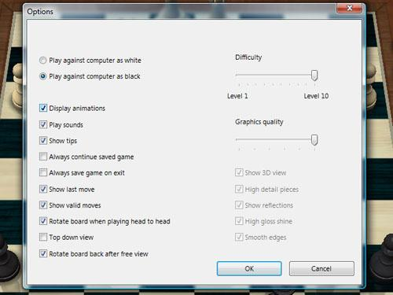
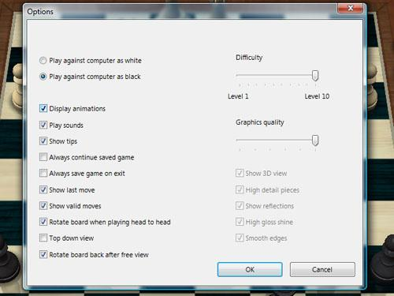
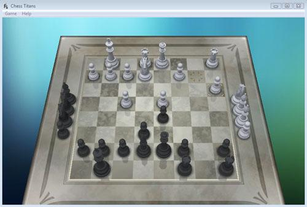
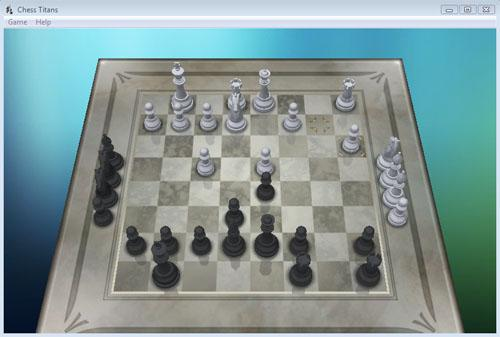

Mac PK Windows: 看来Mac比较聪明
8/26/2007 8:40:39 PM


有关Mac OS和Windows之间的恩恩怨怨在Intel Inside的Mac出现后越演越烈，我想双方也不会就此罢休。
但是我觉得与其争论伤了和气，倒不如充分利用各自系统的优点，提高我们的生活质量和工作效率。
我是Mac的铁杆支持者，但是我并不抗拒用PC，Linux和Windows都是我工作中有力的补充。
Windows Vista出来的时候，很多人把它和几年前的Mac OS X 10.4比较，以此大做文章。
Vista和OS 10.4并非同一年代的产物，作为比较老旧的OS 10.4来说Vista也并没有造成多大的冲击。
毕竟就可维护性，稳定性和安全性，多媒体体验，移动设备整合，界面渲染等等很多核心的技术上，几年前的OS 10.4还是表现出惊人的生命力。
(别忘记了，就系统功能本身，Mac OS X 10.4以几年前的硬件配置实现了如今顶级配置的PC加Vista才能实现的便利性和实用性。)
别说Vista并没赢得大众芳心，就算赢了，也不光彩，而且仅仅是暂时的。毕竟OX 10.4要比较的应该是Windows XP，然而胜负早已分晓。
Vista有很多让人兴奋的“新”特性，但是其中包含太多Mac OS的影子了，当我第一次装上Vista的时候，就惊叹：微软居然会把这样糟糕的产品推向市场。
于是就在那个时候，我做了一个实验，拿的就是Windows Vista从Mac OS上偷来的国际象棋游戏作为较量的平台。
实验方法很简单，在Mac和Vista下都选“人机对战”，然后人工把A电脑的活动通知B电脑，然后在B电脑作出回应后又人工通知A电脑，如此循环直到分出胜负。
以人作桥梁，比较到底算法上是Vista优秀，还是老旧的Mac OS X 10.4？到底谁会赢得这个棋局呢？
选择Vista先走，经历4个多小时的苦战后，Mac以压倒性的阵势战胜Vista。
详细过程我都截图保存了，文末贴出比较有代表性的画面。
本文不是想以一个游戏说明什么，而是通过这个实验引发一些思考：我们需要更好的操作系统，Mac和Windows都需要继续努力。只是对于此，我觉得Windows需要作更大的改进，不能再故步自封，自欺欺人了。
Vista的象棋做得比Mac上得漂亮，功能也比较多，但是却赢不了棋局。
同理，作为一个操作系统，漂亮就足够了吗？
正如女人一样，漂亮的外表里头需要有善良聪明的内在，才能称得上好姑娘。
Vista呀，空只有华丽外表，没有智慧，病毒缠身，又以木马与别的机器“通奸”，充其量只能说是个穿金戴银的妓女。
微软呀，不是说Windows不好，正因为Windows的广泛性，大众对Windows才有了更高的要求。
我们期待有一天，Windows能真正成为众望所归的气质美女，而不仅仅是靠成熟的市场运作取胜。
 
 



磊 苏 - 10/22/2007 9:02:11 PM